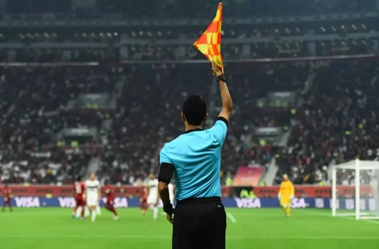
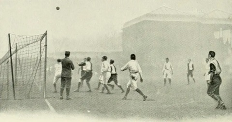
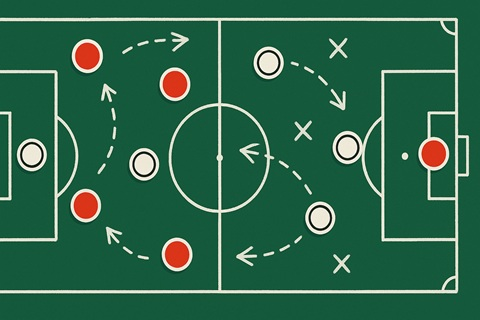
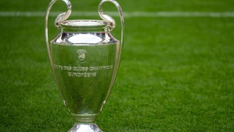

Вступ
Футбол — командний вид спорту, в який грають дві команди по
одинадцять гравців зі сферичним м'ячем. Близько 250 мільйонів
чоловіків і жінок із більш ніж 200 країн грають у
футбол, що робить його найпопулярнішим у світі видом спорту.
Футбол —
олімпійський вид спорту. У футбол грають на прямокутному полі з воротами на
кожному кінці. Мета гри полягає в тому, щоб забити
м'яч у ворота протилежної команди. Гравцям не дозволено торкатися м'яча
руками, поки він перебуває в грі, якщо вони не воротарі (і тільки тоді,
коли він перебуває в їхньому штрафному майданчику), або під час укидання
м'яча. Інші гравці здебільшого використовують свої ноги, щоб завдати вдару або передати м'яч,
але можуть також використовувати голову і тулуб. Команда, яка забиває
більше голів до кінця матчу — виграє його. Якщо жодна команда не забила
м'яч, або рахунок однаковий, то оголошується нічия, або гра переходить у
додатковий час, або пенальті, залежно від формату змагань.
Головні правила
Уперше правила введені 7 грудня 1863 року Англійською футбольною асоціацією. Базувались на придуманих у Кембриджському університеті положеннях гри. Грають на футбольному полі завдовжки 90—120 метрів і завширшки 45—90 метрів. На двох протилежних кінцях стоять ворота (завширшки 7,32 м і заввишки 2,44 м), куди потрібно завести м'яча. М'яч, обвід якого повинен бути 68-71 см, а маса — від 396 до 453 грамів. У момент початку гри тиск усередині кулі має бути від 0,6 до 1,1 атмосфери (600—1100 г/см²). Кількість запасних гравців визначається регламентом змагання і знаходиться у межах від 3 до 7. Рішення судді є остаточними і під час гри не переглядаються, якщо на матчі не задіяна система відеоасистенту арбітра. В такому випадку після прийняття рішення та в разі порушення правил відеоасистент арбітра може запропонувати головному арбітру змінити своє рішення шляхом усної рекомендації або перегляду відеоповтору моменту безпосередньо головним арбітром. Для подачі скарг на дії суддів існує регламент змагання і спеціальні комітети, що розглядають дані питання. Футбольний матч складається з двох рівних таймів по 45 хвилин із 15-хвилинною перервою між ними. Після перерви команди міняються воротами. За домовленістю тривалість тайму може бути змінена. Проте домовленостей потрібно досягти до початку матчу, і вони не повинні суперечити правилам змагання. Перерва між таймами не перевищує 15 хвилин й указується у регламенті змагань. Регламент змагань може потребувати додаткового часу для вирішення нічиїх.
Історія футболу
Ігри, схожі за основними принципами на сучасний футбол, існували в різних народів з давніх часів. Так, серед претендентів на головний прообраз футболу є стародавні китайці (чжу-чу), давні римляни та греки (гарпастум), середньовічні італійці (кальчо), ацтеки. Проте нинішній футбол є прямим нащадком гри у м'яч в Британії. Перші правила гри, які чітко розрізняли футбол і регбі, були записані 1863 року, хоча перші футбольні клуби з'явилися дещо раніше. Футбол за встановленими правилами здобув популярність наприкінці XIX-го, на початку XX-го століття. Завдяки британським морякам гра потрапила в численні портові міста світу, а звідти поширилася на територію країн Європи, Латинської Америки, Африки, Азії.
Тактика
Оскільки футбол гра командна, на перше місце висувається взаєморозуміння гравців, уміння вести грамотні спільні дії. Важливе значення при цьому має тактичну побудову гравців. Тактика поділяється на три основні категорії:
- розстановка гравців
- дії команди при атаці або при обороні, в відношенні або всієї команди, або її частини;
- стандартні положення.
Для гравців і тренерів важливо визначити роль кожного гравця на полі і способи, якими вони повинні досягати мети гри, — забити гол і не дозволити зробити цього суперникам. Для цього доводиться приділяти увагу всім трьом аспектам тактики, а також стежити за еволюцією гри в цілому. Найпоширенішою тактичною схемою в сучасному футболі є гра з чотирма захисниками, чотирма півзахисниками і двома нападниками — 4-4-2. Існує велика кількість схем, проте саме поняття схеми, як і поняття амплуа гравців досить відносно. У залежності від кваліфікації гравців, їх обов'язки на полі можуть значно виходити за межі амплуа.
Кутові
Кутові, або корнери — одне з трьох основних стандартних положень, поряд з вільними ударами і вкидання. Підраховано, що понад 50 відсотків м'ячів забивається саме зі стандартних положень. Кутові поділяються на три типи: подача м'яча на ближню штангу, на дальню штангу або короткий розіграш. При подачі на ближню штангу можна і відразу бити по воротах.
Вільні удари
Можливість забити м'яч з вільного удару залежить від відстані до воріт і від того, прямий це удар чи ні.
Вкидання
Вкидання м'яча у штрафний майданчик може бути розіграно двома способами: або гравець скидає м'яч своєму партнеру, або відразу б'є по воротах.
Основні змагання
Футбольні змагання проводяться на рівні клубів, аматорських і професійних, а також на рівні національних збірних країн світу.
Рівень національних збірних
Найважливішим футбольним змаганням є Чемпіонат світу з футболу, який розігрується під егідою ФІФА кожних чотири роки, і в якому беруть участь національні збірні понад 200-от країн світу. Це змагання складається з кваліфікаційного етапу, на якому відбираються 32 найкращі збірні, й фіналу. Окрім Кубку світу серед чоловіків ФІФА проводить також Кубок світу серед жінок, а також низку молодіжних і юнацьких змагань з віковими обмеженнями для учасників. ФІФА відповідає також за проведення Олімпійського футбольного турніру — змагання з футболу в рамках Олімпіад. У проміжку між фіналами Кубку світу, проводяться континентальні чемпіонати, зокрема в Європі, чемпіонат Європи з футболу.
Рівень клубних команд
На клубному рівні найважливішими футбольними змаганнями є національні чемпіонати, в Україні - Чемпіонат України з Футболу, та національні кубки, в Україні — Кубок України з футболу. Національні футбольні змагання організовані за системою ліг і дивізіонів й охоплюють гравців усіх рівнів — від аматорів до професіоналів. Окрім національних клубних змагань існують міжнародні клубні турніри. Найпрестижнішими міжнародними турнірами на клубному рівні є європейська Ліга чемпіонів УЄФА та латиноамериканський Кубок Лібертадорес. Іншим міжнародним кубковим змаганням у Європі до 2009 року був Кубок УЄФА, який з сезону 2009/2010 було реорганізовано в Лігу Європи, а також Ліга конференцій УЄФА, перший розіграш якої розпочався в 2021 році.
Організації
Організацією футболу у світі опікується ФІФА — Міжнародна федерація футболу. ФІФА — асоціація, яка була заснована згідно з законами Швейцарії. Її штаб знаходиться в Цюриху. Головним керівним органом ФІФА є Конгрес ФІФА — збори представників від кожної з національних федерацій, які входять до складу ФІФА. Конгрес збирається на звичайні сесії один раз щороку й на позачергові сесії, які проводяться один раз на рік з 1998 і дотепер, а також коли виникає потреба. Лише Конгрес може здійснити зміни в статуті ФІФА. Конгрес обирає президента ФІФА, її генерального секретаря й інших членів Виконавчого Комітету ФІФА. Президент і генеральний секретар — головні посадовці ФІФА. Вони відповідають за її щоденну адміністрацію, що провадиться Генеральним Секретаріатом, штат якого налічує 207 членів.